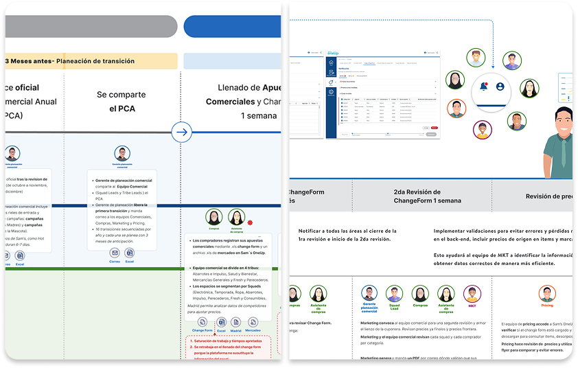

From Research to Value Proposition:
An End-to-End UX/UI Design Process


Led process mapping to identify pain points and uncover opportunities for optimization. Delivered data-driven solutions through cross-functional Agile collaboration, applying UX best practices and implementing scalable design systems.
Tasks:
- * Defined goals, research plan, and key user roles
- * Mapped processes to identify optimization opportunities
- * Analyzed current processes to drive improvements
- * Identified pain points and opportunity areas across the journey
- * Designed and developed “As-Is” and “To-Be” experiences
- * Delivered wireframes, prototypes, and UX/UI specs
- * Conducted user testing to validate solutions
- Software: Figma, Jira, Office Suite, Mural